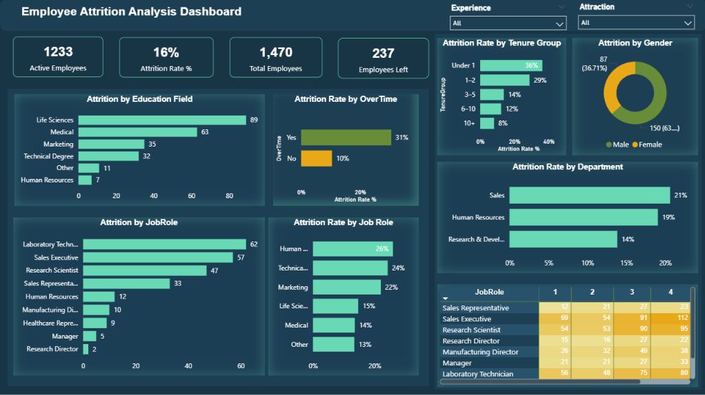
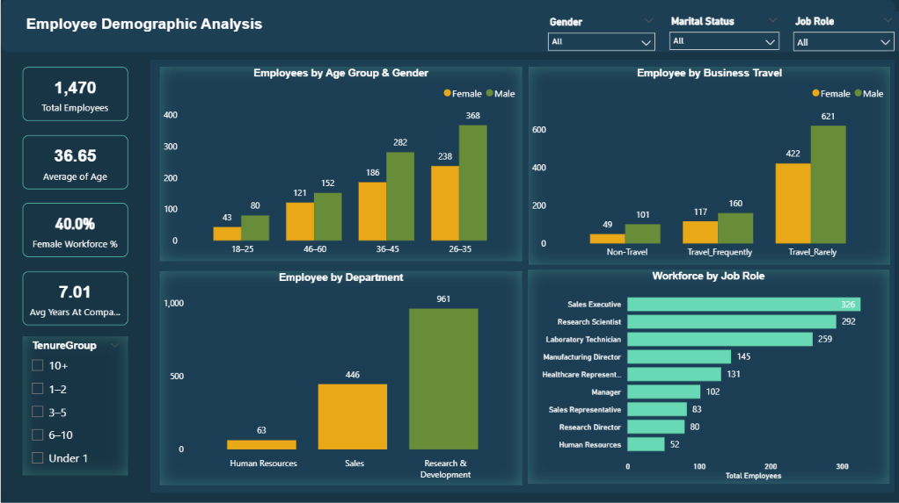
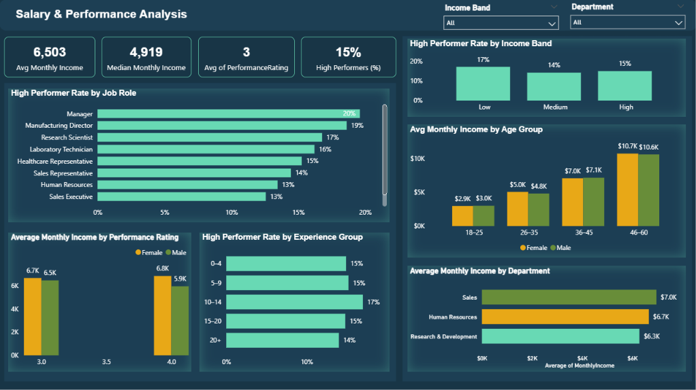
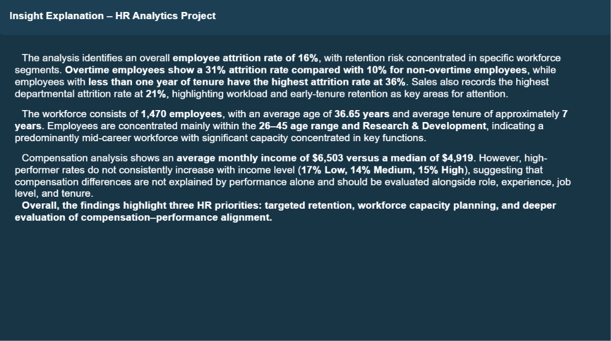
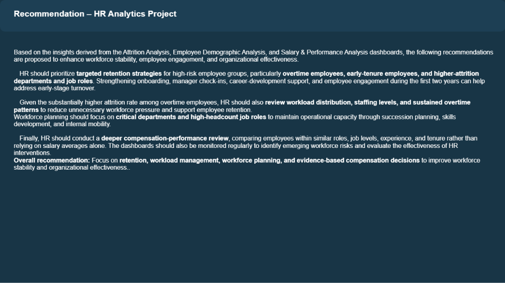

Project Overview
This project is an interactive HR Analytics solution built with Power BI to analyze employee attrition, workforce demographics, compensation, and performance.
The analysis uses 1,470 employee records and helps HR decision-makers identify retention risks, understand workforce composition, evaluate compensation and performance patterns, and translate findings into actionable HR recommendations.
Business Context
HR decision-makers need more than overall employee counts to understand workforce risk. They need to know where turnover is concentrated, which employee characteristics are associated with higher attrition, how workforce capacity is distributed, and whether compensation and performance patterns are aligned. Without an integrated analytical view, retention and workforce planning decisions can become reactive rather than evidence-based.
This project provides an integrated analytical view across three key HR areas: Attrition & Retention, Workforce Demographics, and Salary & Performance.
Project Objectives
- Measure overall employee attrition and identify high-risk workforce segments.
- Analyze attrition patterns associated with overtime, tenure, department, job role, education field, and gender.
- Understand workforce composition across age, gender, department, job role, business travel, and tenure.
- Evaluate compensation and high-performance patterns across employee segments.
- Translate analytical findings into practical HR recommendations for retention, workload management, workforce planning, and compensation review.
Business Questions
- Where is employee attrition risk concentrated across departments and job roles?
- How do overtime and employee tenure relate to attrition risk?
- How is the workforce distributed across age, gender, department, job role, business travel, and tenure?
- Which departments and job roles represent major workforce capacity?
- How do compensation and high-performer rates vary across employee segments?
- Does higher compensation consistently correspond with stronger employee performance?
Analytical Approach
Dashboard





Business Impact
The solution enables HR decision-makers to identify retention risks, distinguish attrition volume from relative risk, understand workforce capacity, review workload pressures, evaluate compensation-performance patterns, and prioritize evidence-based workforce interventions. The overall project supports a more stable, productive, and data-driven workforce strategy.